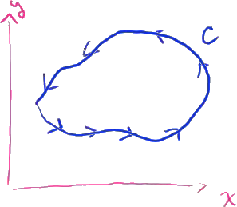

That's my y-axis, that is my x-axis, in my path will look like this.
Let's say it looks like that; trying to draw a bit of an arbitrary path, and let's say we go in a counter clockwise direction like that along our path.

And we could call this path-- so we're going in a counter clockwise direction --we could call that path c.
